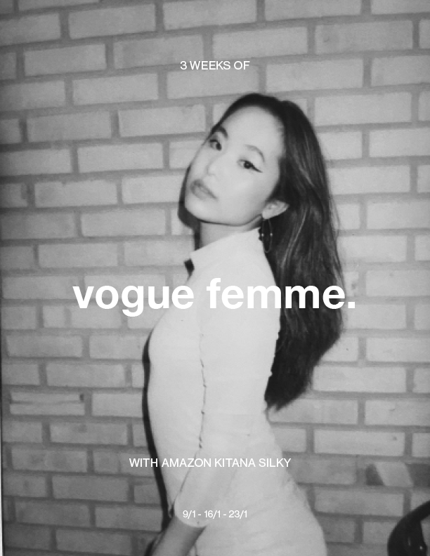
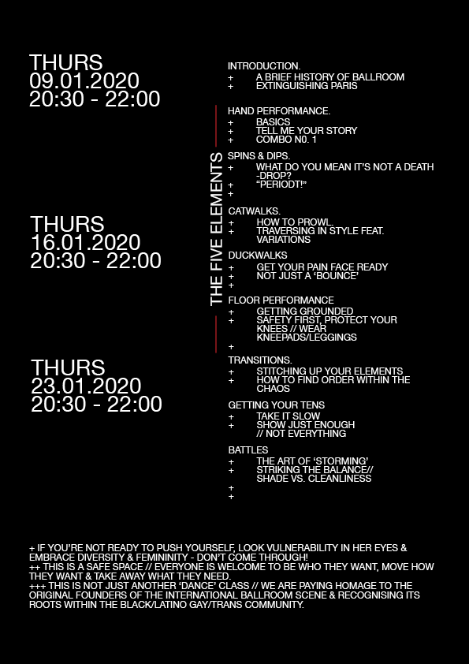

Vogue Femme Workshop (2020) - Lisbon (Portugal)
Guest workshop for Lisbon Vogue Community's Anniversary.
Organised by Joana Inês
Collab Vogue Femme x Afro Workshop (2020) - Sydney (Australia)
A fundraiser for the NSW Bushfires. Collaboration with Tony
3-Week Vogue Femme Workshop - Sydney (Australia)
My first and last workshop in Sydney before leaving Australasia in 2020

